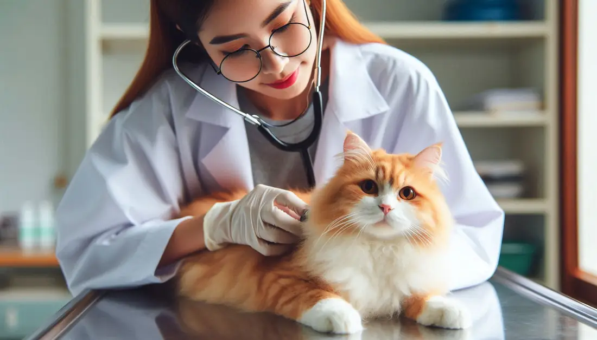

About Pet Vida
A clinic built around calm
Separate waiting areas for dogs and cats, exam rooms with non-slip tables, and vets who explain before they act. A visit should not be the scariest part of your pet's week.
How we work
1
Prevention firstVaccines, parasite control and nutrition plans tuned to your pet's age and breed.
2
Answers the same dayIn-house lab, X-ray and ultrasound mean fewer trips and faster decisions.
3
You stay in the loopEvery plan comes with options, costs and what to expect, in plain language.

Our team
The people behind the care
Six veterinarians, each with a specialty, all comfortable with the basics.
- CardiologyDra. Ana Souza15 years with small animals. Runs charity marathons for abandoned pets.
- Orthopedic surgeryDr. Marcos Lima20 years in surgery. Co-wrote a manual on orthopedic techniques.
- DermatologyDra. Carla Reis12 years treating skin and allergies. Writes a blog on pet skincare.
- NeurologyDr. Rafael Costa18 years. Wildlife photographer on weekends.
- Feline medicineDra. Juliana Prado10 years. Works with NGOs on responsible cat adoption.
- DentistryDr. Thiago Nunes8 years. The one who convinced the whole team to brush their dogs' teeth.
Ready when you are
Book a check-up or call us about anything that worries you.
Book a visitBook a check-up or call us about anything that worries you.